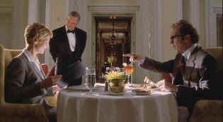

| Contender,The
(SE)/B+,B+ |
| Dreamworks/2000/127/ANA
1.85 |
Nothing like a good
political flick in the midst of a presidential election year. The problem is that elections today
are so bizarre they often can eclipse the fiction of film. Perhaps The Contender, a very
good film, was lost in the shuffle of confusing ballots. Maybe it falls off the bridge a bit with
some hokey mystery making, but there’s so much terrific stuff going on.
 |
| Is she smiling or gritting her teeth?
©Dreamworks |
There's a vacancy in The White House for a Vice President and President Jackson Evans has his own
ideas about who would make the most historically significant choice. The party faithful and the
President's political advisors are none too happy with the potential difficulty presented by the
Evans decision, but the machine roles out dutifully to do their grunt work. A senate hearing turns
into a smut leveling food fight before all the decisions are final. It's a good show, replete with
healthy doses of dirty politics and political posturing.
The performances are terrific. Joan Allen is a convincing Senator Laine
Hanson. She one actress that is able to convey the thought process behind a character’s dialogue.
Jeff Bridges is grandiloquent as President Jackson Evans. Bridges brings a natural good nature to
the part, yet there’s a determination in the character that belies his charming focus on the
culinary capabilities of the White House kitchen. What I liked most about Bridges performance is
that he never seems to be doing an imitation of a past President; the character is created of his
intelligence. Gary Oldman simply baffles me: he totally disappeared into the role of slimy Shelly
Runyon, the congressman with a self-righteous streak long enough to scale the Washington Monument.
Sam Elliot, without his customary mustache, using the deepest voice this side of Texas to good
effect as the president’s chief of staff. I shouldn’t forget to mention Christian Slater and
William Peterson, who are both quite good as well.
The politics is addressed in a mature way. Some of it may be over
simplified, but that’s okay with me; it’s a movie after all. Some script
elements are clearly contrived and manipulated to produce surprises. While I often find this
objectionable, the film is more entertaining for the added melodramatic flourishes. Rod Lurie shows
a sure hand at writing and directing and putting together a first class production team.
Great looking DVD. No
quibbles with the image making here. A consistently sharp DVD without much edge ringing to muddy
the image waters. Very nice contrast range with delicately lit scenes well-balanced and more high
key situations bright and punchy. Excellent color saturation and fine range of skin tones. Deep
blacks and revealing shadow detail. Dolby Digital 5:1 and DTS surround tracks are included with
excellent ambient imaging.
|
|
|
|


The home of John Tisch's invaluable Poster Price Almanac. Every serious poster collector
uses the Almanac as a reference.

The National Film Preservation Foundation (NFPF) is the nonprofit organization created by the U.S. Congress to save
America's film heritage.

Reviews of affordable remote controls in the market place. Codes
and tips as well.

DVDinsider is a daily
email publication targeting the DVD Industry Professional. The publication includes current news,
events, stock prices and more.
 Across the
Bridge Posters won't sell you the Brooklyn Bridge,
but have a look at their selection of movie posters. Across the
Bridge Posters won't sell you the Brooklyn Bridge,
but have a look at their selection of movie posters.
Avid-Collector Posters

Great selection of big foreign paper, plus the home of J. Fields linen
service.
 Kinoeye Archive Kinoeye Archive
This is a resource of all content-rich
materials on the web relating to Central and East European cinema. The ultimate aim of the Kinoeye
Archive is to provide a near-as-damn-it definitive index of intelligent and thoughtful
English-language analysis of Central and Eastern European cinema on the web.
|